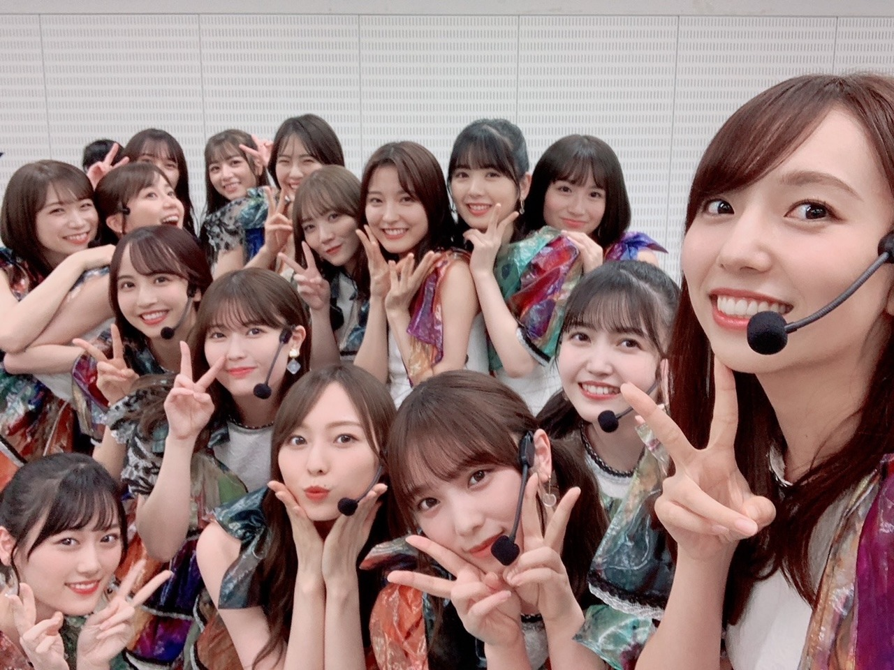

乃木坂46 公式ブログ
ご報告です
2021.11.29 21:00
副キャプテンに就任することになりました。
グループとして
初めての副キャプテンという立場、
今後どういう役割を担っていけるのか
どう力になっていけるのかは
模索しながら活動していく形になるかと思います。
加入して６年目を迎え、
これまで１期生、２期生の先輩方から学んできたことはたくさんあります。
３期生だからといって
後輩という立場に周り過ぎるのではなく、
間もなく５期生の加入もありますし
伝えていくことに目を向けていかなければならないと感じています。
お恥ずかしい話ですが
わたしは５年間活動してきましたが
自分の強みや良さをあまり理解出来ていない部分が多いです、
周りを見れば
グループを背負いながら
すごく誇りで、憧れで、刺激的で。
私でいいのか、と
お話を聞いた日から今日まで
日々自分の中で葛藤しながら
自問自答を繰り返していました。
正直 不安な部分はありますが
来年には グループとして新しい挑戦になる
止まることなく
どんどん勢いを増していくこのグループを
少しでも支えて行けたらなと思っています。
何より キャプテンに就任してから２年間、
真夏さん一人に全てを背負わせてしまっていた事に
申し訳なさを感じています。
目に見えない重圧や
背負わなければいけない責任は
莫大にあったはずですが
そんなものを感じさせずに
こんなこと言うのは烏滸がましいですが
これからは真夏さんが背負うものを
少しでも一緒に背負えるように、
私なりに副キャプテン像を探しながら 精一杯努めさせて頂きます。
色々思う方もいるかと思います、
皆様からの声をしっかり受け止めながら
今後はより気を引き締め頑張らせていただきます。
どうか、
どうか よろしくお願い致します。
いつもたくさんの応援、
ありがとうございます！

Source：梅澤美波 公式ブログ
Original：https://www.nogizaka46.com/s/n46/diary/detail/64263?ima=4933&cd=MEMBER
Original：https://www.nogizaka46.com/s/n46/diary/detail/64263?ima=4933&cd=MEMBER